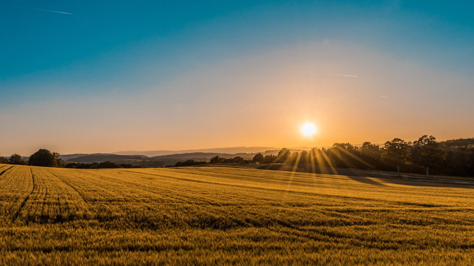

El auténtico sabor del café orgánico del Perú
Disfruta de un café cultivado de manera natural en las mejores tierras del Perú. Cada grano es cuidadosamente seleccionado para brindarte un aroma especial, un sabor intenso y una experiencia única en cada taza, manteniendo la esencia y tradición del verdadero café peruano.
El arte de un buen café
Detrás de cada taza existe una historia que comienza desde la selección de los mejores granos.
Cuidamos cada detalle para brindarte un café fresco, aromático y lleno de sabor, pensado para convertir cada momento en una experiencia especial.

Café con la naturaleza y el campo
El café nace de la conexión entre la naturaleza y el campo. Cada grano es cultivado con dedicación, rodeado de montañas, aire puro y tierras fértiles, conservando un sabor y aroma que reflejan la esencia natural de su lugar de origen.
- Café Armonía Con la Naturaleza:
- Nuestro café nace rodeado de naturaleza y campos llenos de vida, donde cada cultivo crece respetando y cuidando el entorno.
- Del Campo a Cada Taza:
- Cada grano representa el trabajo del campo y la dedicación de quienes cultivan el café, llevando un sabor natural y especial hasta tu taza.